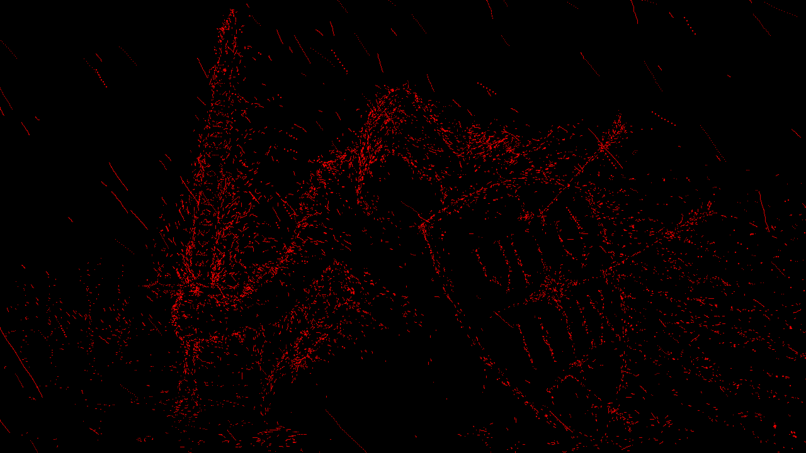

The original animated GIF is decoded frame by frame, then sampled live into a Three.js particle field. Change the point count without changing the source artwork.

FRAME FIELD / 041SOURCE → PARTICLES
Original GIF visible · loading Three.js particles…